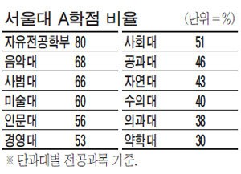

학점 후한 서울대?...단과대별 차이도 커
정치외교학부 김건우
“공대는 학점을 정확히 3:4:3으로 나눠줘요.”
“억울한 면이 있죠...”
서울대, 고려대, 연세대 등 소위 ‘SKY’대학의 ‘학점 인플레이션’ 현상이 심각한 수준이다. 졸업 후 불이익을 우려한 학생과, 취업과 진학을 위해 고군분투하는 제자들을 외면하지 못한 교수들이 합작한 결과라는 지적이다.
학점 인플레이션은 졸업생들의 성취에 대한 신뢰도를 약화한다는 점에서 지양되어야 한다. 그러나 대학들의 느슨한 학사 운영과 학생들의 ‘성적 내리기’, ‘꿀강 찾기’ 등의 편법이 결합돼 문제는 더욱 심각해지고 있다. 이에 취업 시장에서 학점은 점차 평가요소에서 배제되거나 최저 자격 요건 정도로만 쓰이는 등 영향력이 많이 낮아졌고 이제 학생들은 좋은 학점은 기본에 높은 스펙까지 요구받고 있다.
특히 서울대학교는 지난 몇 년간 절반 이상의 졸업생이 A학점 이상을 받은 것으로 알려져 학점 인플레이션의 주범으로 몰렸다. 그럼에도 서울대는 재수강 제한 횟수 및 재수강 시 취득 가능한 최고 학점 제한 등 인플레이션 현상을 적극적으로 해소하려 노력했던 고려대, 연세대와 달리 눈에 띄는 조치를 취하지 않고 있어 논란이 이어지고 있다.

실제로 대학알리미 공시 자료에 따르면 13년 59.5% 14년 61.8%를 기록했으며 가장 최근의 18년에는 64%에 육박했다. 5년간 인플레이션 현상이 잠재워지기는커녕 심화되고 있는 셈이다. 문제는 이뿐만이 아니다. 학점 인플레이션 현상은 예상치 못한 문/이과 갈등을 낳고 있기 때문이다.
서울대학교 공과대학에 재학 중인 A(23)씨는 인문·사범·사회과학대학에 비해 공대·자연대의 학점이 매우 박한 편임을 언급하며 분통을 터뜨렸다. A씨는 특히 공과대학은 학점을 3:4:3(A:B:C)으로 정확히 나눠주는 경향이 있어서 학점 인플레이션이 만연한 지금, 상대적으로 더 큰 불이익을 받고 있음을 지적했다.

위 그래프는 16년부터 3년간 단과대별 졸업생들의 평균 학점 분포를 보여준다. 공과대학은 3.24에서 3.3으로 소폭 상승하긴 했지만 사회대의 3.59/3.61/3.64에 비하면 유의미하게 낮은 수치다. 그래프에서 한눈에 알 수 있듯이, 소위 이과로 분류되는 자연·공학·수의·의학의 학점이 상대적으로 낮다. 이러한 차이는 전공 학점에 부여되는 A학점 비율 자료에 따르면 더 명백히 확인된다.

2018년 전공과목 성적평가 분포 데이터에서 A학점(A+, A0, A-의 합산)의 비율만 따로 합산 후 평균을 계산해보니 (10인 이하의 전공은 대표성을 위해 제거함.), 공과대학과 자연과학대학은 1학기와 2학기 모두 50% 초중반 정도의 학생들이 A학점을 받은 것으로 나타났다. 이에 반해 사범대학, 사회대, 인문대학은 모두 60% 중후반대로 나타나면서 A씨의 불만이 어느 정도 사실인 것으로 밝혀졌다. 그럼에도 3:4:3의 비율이 지켜지지는 않고 그 차이가 10% 정도로 체감 격차에 비해서는 낮은 수치였다.
공과대학도 13년 46%에 비해 5년 새 10% 이상 증가한 것으로 보여 어느 정도 인플레이션 현상에 영향을 받은 것으로 보인다. 그럼에도 문/이과 간 학점 배분에 격차가 사실상 존재하며 이는 점차 학과와 상관없이 경쟁하는 융합적 일자리가 늘어나고 있는 현 상황에서 일종의 차별로서 작용할 가능성이 예측된다.
지난 2018년 서울대학교는 기초과목 절대 평가제 전환, 타전공 S/U 성적평가 방법제를 비롯한 새 학점 개편안을 내놓으며 이는 학점 인플레이션 현상을 막고 더 나아가 과도한 학점 경쟁에 멍든 대학교육의 의미를 되살리기 위함이라 밝혔다. 이번 개편안이 단과대별 학점 불균형 해소에도 기여할 수 있을지 귀추가 주목된다.
참고자료 : 대학알리미 공시 자료 www.academyinfo.go.kr